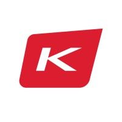
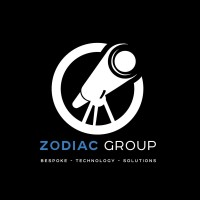
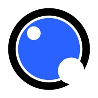

January 2023 - August 2023
I am actively involved in migrating and deploying customer environments to the Azure cloud platform. I develop automation solutions using Python and Ansible to improve operational efficiency, and I maintain comprehensive documentation on Confluence. Additionally, I excel in managing Docker containers with Helm charts and implementing Self-Healing mechanisms in Kubernetes to optimize application performance and ensure accessibility.
June 2022 - August 2022
Developed iOS applications using Xamarin.Forms, integrating JWT authentication and RESTful APIs for enhanced functionality. Led a 4-member team to successfully define, design, and implement new features, showcasing strong analytical skills in meeting client specifications and project requirements. Additionally, significantly improved user experience by rebuilding the landing page and other sections, resulting in a 20% increase in UI animations and faster load times.
May 2021 - September 2021
Created Django REST Framework and integrated new API endpoints using Django, Python, and MongoDB. Collaborated with website designers to build frontend components using React.js for an online NFT marketplace. Utilized Agile methodology, including sprint planning, backlog grooming, and cross-team discussions, to ensure efficient development in a fast-paced environment.